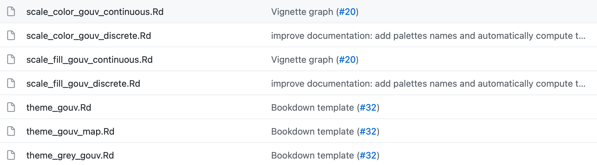
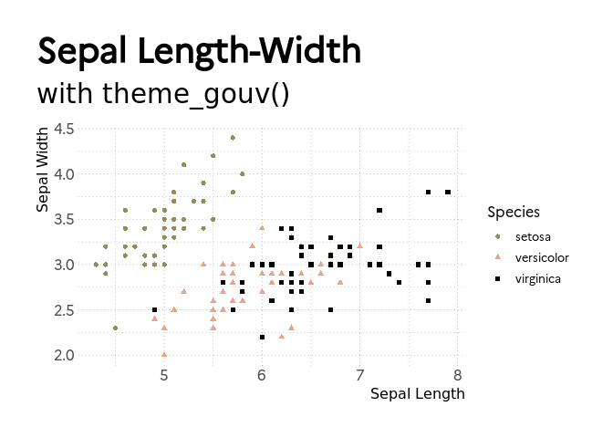
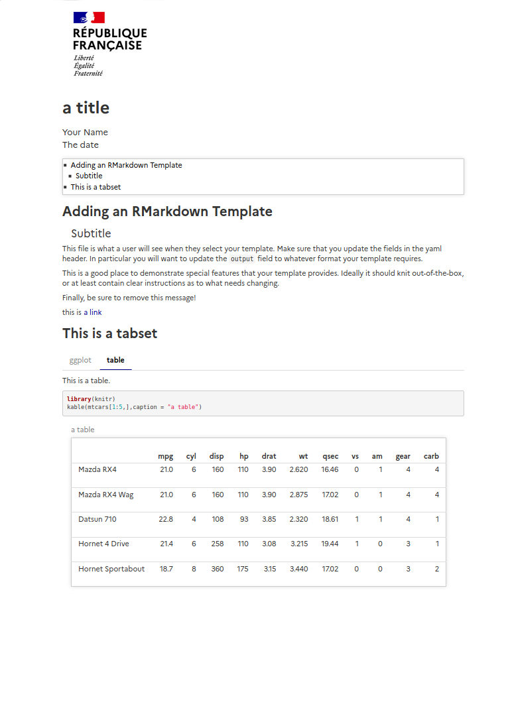
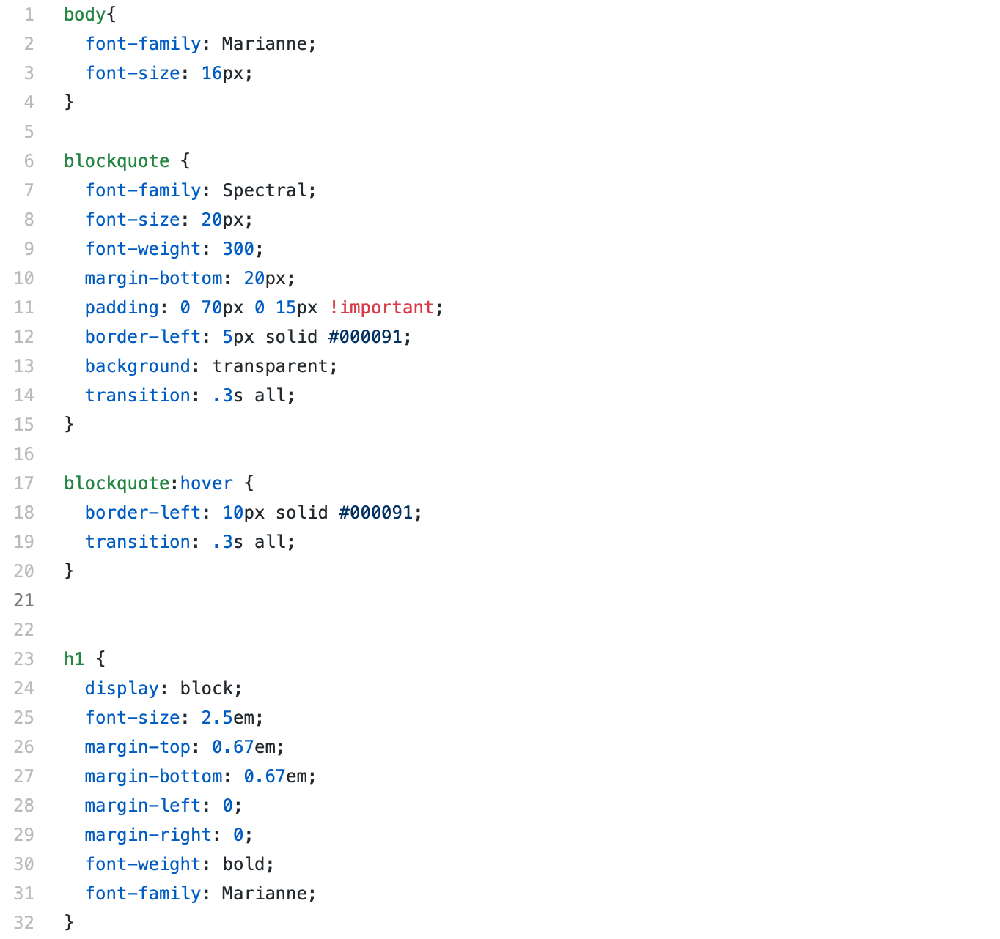
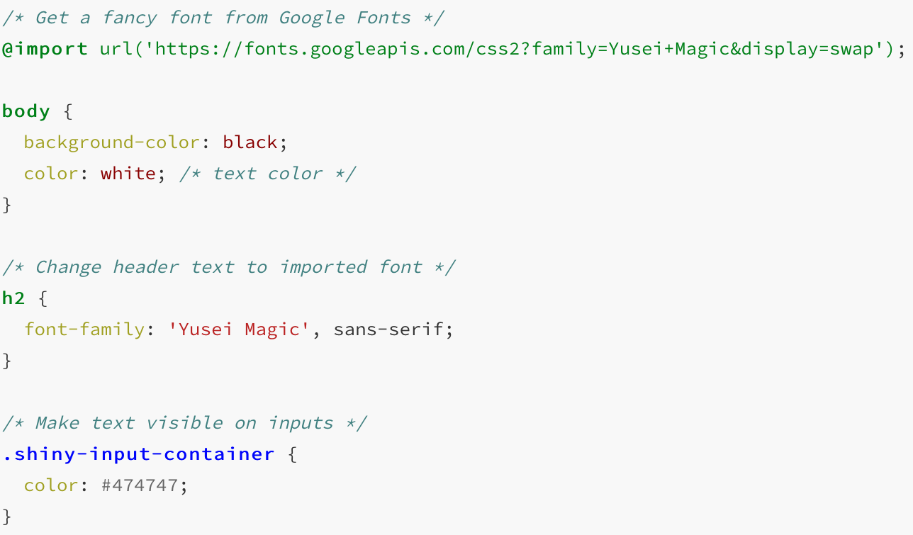

zz-etat-de-l-art.Rmd{ggplot2}
Le package {gouvdown} fournit des fonctions permettant de créer des graphiques ggplot2 qui respectent la charte graphique de l’Etat français.

Avec {gouvdown}, le code d’un graphique s’écrit de la manière suivante :
library(gouvdown) # chargement du package {gouvdown}
library(ggplot2) # chargement du package {ggplot2}
ggplot(iris, aes(Sepal.Length, Sepal.Width, color = Species)) +
geom_point(size = 4) +
scale_color_gouv_discrete() + # utilisation de la palette de couleurs de l'Etat français
theme_gouv() # utilisation du thème ggplot2 respectant la charte graphique de l'Etat français
De la même manière, avec {bdxmetroidentity}, le code d’un graphique pourrait s’écrire de la manière suivante :
library(bdxmetroidentity) # chargement du package {bdxmetroidentity}
library(ggplot2) # chargement du package {ggplot2}
ggplot(iris, aes(Sepal.Width, Sepal.Length, color = Species)) +
geom_point(size = 4) +
scale_color_bdxmetro_discrete() + # utilisation de la palette de couleurs de Bordeaux Métropole
theme_bdxmetro() # utilisation du thème ggplot2 respectant la charte graphique de Bordeaux MétropoleFonctions :
palette_bdxmetro()scale_color_bdxmetro_continuous()scale_color_bdxmetro_discrete()scale_fill_bdxmetro_continuous()scale_fill_bdxmetro_discrete()theme_bdxmetro_dark()theme_bdxmetro_light()Exemples des palettes dans {thinkridentity} :
# Visualisation des palettes dédiées aux continuums
show_pal(cols = thinkr_pal("continuous")(20), show_text = FALSE)
show_pal(cols = thinkr_pal("continuous2")(20), show_text = FALSE)
# Visualisation de la palette dédiée aux valeurs discrètes
show_pal(cols = thinkr_pal("discrete")(20), show_text = FALSE)
# Visualisation de la palette dédiée aux valeurs divergentes
show_pal(cols = thinkr_pal("divergent")(20), show_text = FALSE){rmarkdown}
Le package {gouvdown} fournit des fonctionnalités permettant d’utiliser un template pour les rapports R Markdown qui respecte la charte graphique de l’Etat français.

Le rapport est rédigé de manière “classique” au format .Rmd. Il est ensuite transformé en rapport au format .html grâce au code suivant :
rmarkdown::render(input = "contenu_rmd.Rmd", gouvdown::html_gouv())La fonction html_gouv() appelle un fichier .css pour la mise en forme du document.

{shiny}
L’intégralité de la mise en forme de l’app peut être renseignée dans un fichier .css, stocké dans le package {bdxmetroidentity} :

Le .css peut ensuite être appelé dans l’ui avec un code de la forme :
addResourcePath("www", system.file("design_bdxmetro.css", package = "bdxmetroidentity")) # rend le .css accessible à l'app shiny
tags$head(
tags$link(rel = "stylesheet", type = "text/css", href = "design_bdxmetro.css") # utilise le .css comme template
)Ou en créant une fonction use_bdxmetro_css() qui sera appelée dans l’ui :
use_bdxmetro_css <- function() {
tagList(
htmltools::htmlDependency(
name = "design_bdxmetro-css",
version = "...",
src = system.file("misc", package = "bdxmetroidentity")),
stylesheet = "design_bdxmetro.css"
)
)
}
# puis
ui <- function(request){
fluidPage(
use_bdxmetro_css(),
h2("Titre"),
tableOutput("table")
)
}